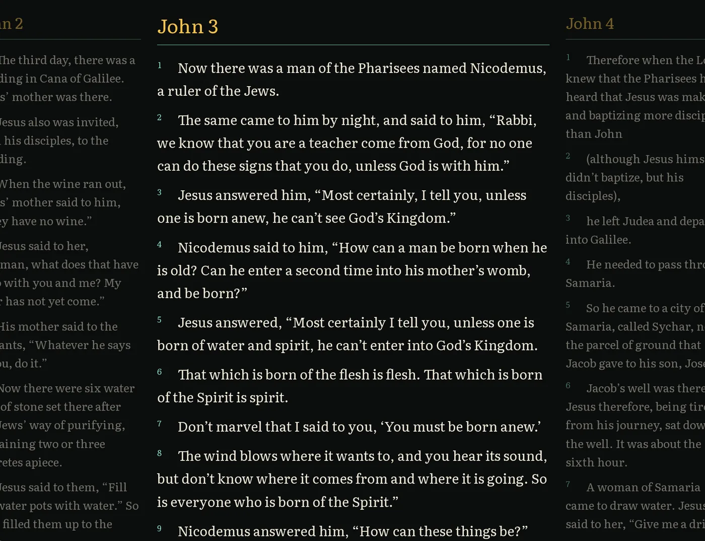

Gospel Getter
A free Bible reader for Windows and Linux that works offline.
- The KJV, BSB and WEB are built in, so you can read with no internet at all.
- Compare any two translations verse by verse, and search every word of the Bible.
- Your bookmarks, highlights and notes stay on your computer. It’s free.
- Open source under the MIT licence.